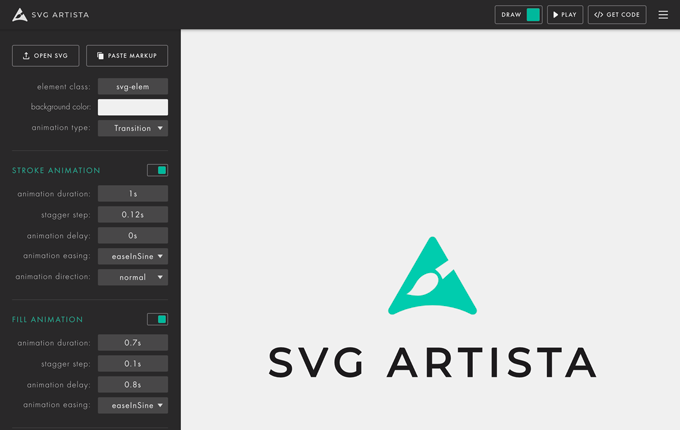
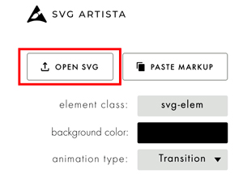
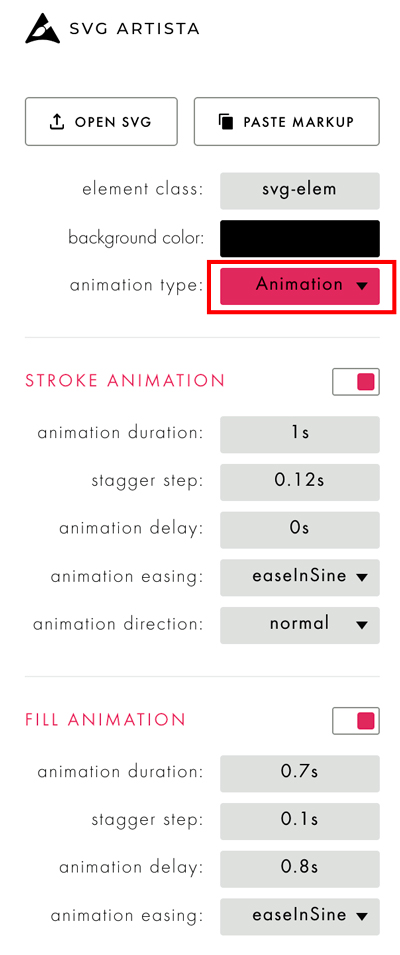
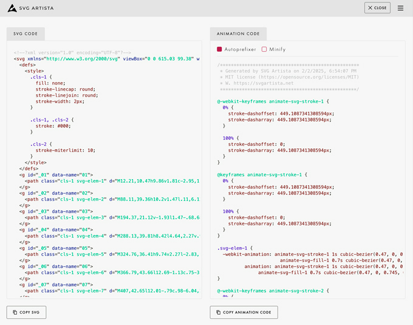

SVG ARTISTA
- レイヤー（オブジェクト）の塗りを設定することも可能
- 表示は、コードを取得して記述

SVG ARTISTAで開く

Animate Type「Animation」を選択
- レイヤーごとのアニメーション後、最終レイヤーの「塗り」が表示される

コードを取得

<!DOCTYPE html> <html lang="ja"> <head> <meta charset="UTF-8"> <meta name="viewport" content="width=device-width, initial-scale=1.0"> <title>SVGアニメ</title> <link rel="stylesheet" href="css/style.css"> </head> <body> <svg xmlns="http://www.w3.org/2000/svg" viewBox="0 0 615.03 99.38" width="615.030029296875" height="99.37999725341797"> <g id="_01" data-name="01"> <path class="cls-1 svg-elem-1" d="M12.21,10.47h9.86v1.81c-2.95,11.86-5.44,23.79-7.48,35.8-2.04,12.01-3.21,24.32-3.51,36.93H1v-6.23c.68-11.63,2-23.15,3.96-34.55,1.96-11.4,4.38-22.66,7.25-33.76M21.28,20.22h9.86c.45,4.38,1.11,8.76,1.98,13.14.87,4.38,2.13,8.5,3.79,12.35h1.13l11.33-9.06,4.3-3.62h.68l.79-1.47,1.02-.34.45-1.13,7.25-7.25h.68l1.81-4.42c3.7-.68,7.59-.91,11.67-.68v1.81l-.34,1.13-3.29,3.62c-1.66,6.04-2.98,12.33-3.96,18.86-.98,6.53-1.36,13.2-1.13,19.99l2.61,18.92h-9.86v-.34c-1.21-4.83-2.06-9.74-2.55-14.73-.49-4.98-.62-10.16-.4-15.52l1.47-13.37h-.68l-.45.68-7.59,6.23c-2.95,2.64-6.29,4.15-10.03,4.53-3.74.38-7.69.42-11.84.11-1.89-.91-3.32-2.45-4.3-4.64-1.21-3.93-2.17-7.89-2.89-11.89-.72-4-1.34-8.04-1.87-12.12l.34-.79"></path> </g> <g id="_02" data-name="02"> <path class="cls-1 svg-elem-2" d="M88.11,39.36h10.2v1.47l.11,6.12c.23,5.14.77,9.52,1.64,13.14.87,3.62,2.51,7.63,4.93,12.01l1.02.34c3.62-5.81,6.68-11.14,9.18-15.97,2.49-4.83,4.68-10.5,6.57-16.99h10.2v1.81c-2.64,7.93-5.63,14.99-8.95,21.18-3.32,6.19-7.52,12.8-12.57,19.82-2.19,3.1-4.38,5.85-6.57,8.27-2.12,2.57-4.95,5.17-8.5,7.82l-11.1-.11v-1.81c3.62-2.04,8.23-6.53,13.82-13.48l2.49-3.62-2.49-.68c-3.4-4.38-5.7-8.46-6.91-12.23-1.21-3.78-2.04-8.46-2.49-14.05l-.91-11.55.34-1.47"></path> </g> <g id="_03" data-name="03"> <path class="cls-1 svg-elem-3" d="M194.37,21.12v-1.93l1.47-.68.68-1.13c3.62-2.42,7.49-4.47,11.61-6.17,4.12-1.7,8.36-2.78,12.74-3.23h15.63c5.36.45,10.23,2.38,14.61,5.78l.34,1.13,1.02.34c2.49,2.42,4.1,5.21,4.81,8.38.72,3.17.96,6.57.74,10.2-.98,5.59-3.29,10.69-6.91,15.29l-1.81,1.81h-.79l-.34,1.02-2.61,2.27c-4.83,3.1-10.16,5.32-15.97,6.68-5.82,1.36-11.86,1.78-18.12,1.25l-1.13,21.86h-9.86v-9.86c.53-8.99,1.34-17.84,2.44-26.56,1.09-8.72,2.25-17.43,3.46-26.11l-12.01-.34M230.73,55.22l8.04-5.1.68-1.47,1.13-.34c2.11-2.87,3.91-5.95,5.38-9.23s2.21-6.85,2.21-10.71c-.76-4.15-2.46-7.82-5.1-10.99l-1.47-1.02v-.79c-4.08-3.1-8.69-4.91-13.82-5.44-3.17.76-6.21,1.68-9.12,2.78-2.91,1.1-5.68,2.36-8.33,3.79v.68h6.23v5.1l-4.76,37.5h3.62c5.36-.75,10.46-2.34,15.29-4.76Z"></path> </g> <g id="_04" data-name="04"> <path class="cls-1 svg-elem-4" d="M288.13,39.81h8.42l4.64,2.27v.91c2.19-.23,3.89.49,5.1,2.15,3.17,4.76,4.42,10.57,3.74,17.45-.76,4.61-2.61,8.69-5.55,12.23l-1.02.57-.34,1.13-2.27,1.13-.68,1.25c-3.17,2.04-6.46,3.59-9.86,4.64h-15.97c-2.64-.6-4.95-1.85-6.91-3.74-3.17-4.53-4.38-9.82-3.62-15.86.45-3.25,1.36-6.44,2.72-9.57,1.36-3.13,3.1-5.98,5.21-8.55l4.76-4.08,4.76-1.93h6.87M287.83,78.9c4.83-2.72,8.34-6.72,10.54-12.01,1.43-3.47,1.93-7.44,1.47-11.9-.53-3.25-1.89-6.08-4.08-8.5-2.64-1.13-5.17-2.45-7.59-3.96l-3.96,2.04-.45,1.36c-2.65,2.34-4.8,5.06-6.46,8.16-2.42,5.06-3.51,10.61-3.29,16.65.68,2.95,2,5.51,3.96,7.7,1.43,1.59,3.13,2.49,5.1,2.72l4.76-2.27Z"></path> </g> <g id="_05" data-name="05"> <path class="cls-1 svg-elem-5" d="M324.76,36.41h9.74v2.27l-2.83,13.03h.68l5.44-5.78,3.96-2.95c2.19-2.19,4.93-3.34,8.21-3.46s6.51-.17,9.69-.17l1.47,1.13.34,6.46-.34,9.18h-10.2v-9.18l.34-1.47h-.68l-3.29,2.27c-3.1,3.85-6.87,8.46-11.33,13.82-1.96,3.62-3.66,7.31-5.1,11.04-1.44,3.74-2.53,7.69-3.29,11.84l-10.54.34v-6.57c.98-7.02,2.02-14.05,3.12-21.07,1.09-7.02,2.62-13.93,4.59-20.73"></path> </g> <g id="_06" data-name="06"> <path class="cls-1 svg-elem-6" d="M366.79,43.66l12.69-1.13c.75-3.62,1.23-7.87,1.42-12.74.19-4.87.55-9.12,1.08-12.74h9.86v3.29l-1.47,21.07h11.33v1.81l-11.67,1.13c-.68,6.57-1.32,13.24-1.93,19.99-.61,6.76-.79,13.54-.57,20.33h-9.86v-1.47l-.34-10.54,2.15-27.19h-12.69v-1.81"></path> </g> <g id="_07" data-name="07"> <path class="cls-1 svg-elem-7" d="M407,42.65l12.01-.79c.98-6.04,2.44-11.97,4.36-17.79,1.93-5.81,4.59-11.25,7.99-16.31l2.15-2.61,2.15-1.02.79-1.13c4.08-1.74,8.68-2.34,13.82-1.81l1.02.34v1.81c-2.12,0-3.93.49-5.44,1.47-3.4,3.17-6.19,6.68-8.38,10.54-1.89,4.15-3.44,8.35-4.64,12.57-1.21,4.23-2.3,8.65-3.29,13.25h15.29l.68.34v1.81l-16.77.34c-1.66,8.99-3.1,18.03-4.3,27.13-1.21,9.1-2.42,18.14-3.62,27.13h-9.86v-3.62c1.21-8.31,2.36-16.63,3.46-24.98,1.09-8.34,2.36-16.63,3.79-24.87h-11.21v-1.81"></path> </g> <g id="_08" data-name="08"> <path class="cls-1 svg-elem-8" d="M474.34,39.81h8.44l4.64,2.27v.91c2.19-.23,3.89.49,5.1,2.15,3.17,4.76,4.42,10.57,3.74,17.45-.76,4.61-2.61,8.69-5.55,12.23l-1.02.57-.34,1.13-2.27,1.13-.68,1.25c-3.17,2.04-6.46,3.59-9.86,4.64h-15.97c-2.64-.6-4.95-1.85-6.91-3.74-3.17-4.53-4.38-9.82-3.62-15.86.45-3.25,1.36-6.44,2.72-9.57,1.36-3.13,3.1-5.98,5.21-8.55l4.76-4.08,4.76-1.93h6.85M474.06,78.9c4.83-2.72,8.34-6.72,10.54-12.01,1.43-3.47,1.93-7.44,1.47-11.9-.53-3.25-1.89-6.08-4.08-8.5-2.64-1.13-5.17-2.45-7.59-3.96l-3.96,2.04-.45,1.36c-2.64,2.34-4.8,5.06-6.46,8.16-2.42,5.06-3.51,10.61-3.29,16.65.68,2.95,2,5.51,3.96,7.7,1.43,1.59,3.13,2.49,5.1,2.72l4.76-2.27Z"></path> </g> <g id="_09" data-name="09"> <path class="cls-1 svg-elem-9" d="M515.98,5.26h9.4l.34,3.29c-2.19,10.04-4.32,20.56-6.4,31.55-2.08,10.99-3.46,22.53-4.13,34.61l1.36,5.89,8.72.34v1.81c-5.06,1.43-10.61,1.93-16.65,1.47l-2.61-2.27c-.68-4.83-.91-9.78-.68-14.84,1.21-11.4,2.72-22.22,4.53-32.46,1.81-10.23,3.85-20.03,6.12-29.4"></path> </g> <g id="_10" data-name="10"> <path class="cls-1 svg-elem-10" d="M546.22,41.06h9.86v3.29c-1.21,6.27-2.17,12.8-2.89,19.6-.72,6.8-1.23,13.59-1.53,20.39h-9.74v-10.88c.45-5.59,1.04-11.04,1.76-16.37.72-5.32,1.57-10.67,2.55-16.03M543.39,15.8h10.08l4.08,3.62v.79l1.02.34,1.13,2.15h.68v1.47l-10.08.34v-.34l-2.61-2.61v-.68l-1.47-.68-.34-1.13-2.15-1.13-.34-2.15"></path> </g> <g id="_11" data-name="11"> <path class="cls-1 svg-elem-11" d="M592.03,39.81h8.34l4.64,2.27v.91c2.19-.23,3.89.49,5.1,2.15,3.17,4.76,4.42,10.57,3.74,17.45-.76,4.61-2.61,8.69-5.55,12.23l-1.02.57-.34,1.13-2.27,1.13-.68,1.25c-3.17,2.04-6.46,3.59-9.86,4.64h-15.97c-2.64-.6-4.95-1.85-6.91-3.74-3.17-4.53-4.38-9.82-3.62-15.86.45-3.25,1.36-6.44,2.72-9.57,1.36-3.13,3.1-5.98,5.21-8.55l4.76-4.08,4.76-1.93h6.95M591.65,78.9c4.83-2.72,8.34-6.72,10.54-12.01,1.43-3.47,1.93-7.44,1.47-11.9-.53-3.25-1.89-6.08-4.08-8.5-2.64-1.13-5.17-2.45-7.59-3.96l-3.96,2.04-.45,1.36c-2.64,2.34-4.8,5.06-6.46,8.16-2.42,5.06-3.51,10.61-3.29,16.65.68,2.95,2,5.51,3.96,7.7,1.43,1.59,3.13,2.49,5.1,2.72l4.76-2.27Z"></path> </g> <g id="_20" data-name="20"> <path class="cls-2 svg-elem-12" d="M12.21,10.47h9.86v1.81c-2.95,11.86-5.44,23.79-7.48,35.8-2.04,12.01-3.21,24.32-3.51,36.93H1v-6.23c.68-11.63,2-23.15,3.96-34.55,1.96-11.4,4.38-22.66,7.25-33.76M21.28,20.22h9.86c.45,4.38,1.11,8.76,1.98,13.14.87,4.38,2.13,8.5,3.79,12.35h1.13l11.33-9.06,4.3-3.62h.68l.79-1.47,1.02-.34.45-1.13,7.25-7.25h.68l1.81-4.42c3.7-.68,7.59-.91,11.67-.68v1.81l-.34,1.13-3.29,3.62c-1.66,6.04-2.98,12.33-3.96,18.86-.98,6.53-1.36,13.2-1.13,19.99l2.61,18.92h-9.86v-.34c-1.21-4.83-2.06-9.74-2.55-14.73-.49-4.98-.62-10.16-.4-15.52l1.47-13.37h-.68l-.45.68-7.59,6.23c-2.95,2.64-6.29,4.15-10.03,4.53-3.74.38-7.69.42-11.84.11-1.89-.91-3.32-2.45-4.3-4.64-1.21-3.93-2.17-7.89-2.89-11.89-.72-4-1.34-8.04-1.87-12.12l.34-.79"></path> <path class="cls-2 svg-elem-13" d="M88.11,39.36h10.2v1.47l.11,6.12c.23,5.14.77,9.52,1.64,13.14.87,3.62,2.51,7.63,4.93,12.01l1.02.34c3.62-5.81,6.68-11.14,9.18-15.97,2.49-4.83,4.68-10.5,6.57-16.99h10.2v1.81c-2.64,7.93-5.63,14.99-8.95,21.18-3.32,6.19-7.52,12.8-12.57,19.82-2.19,3.1-4.38,5.85-6.57,8.27-2.12,2.57-4.95,5.17-8.5,7.82l-11.1-.11v-1.81c3.62-2.04,8.23-6.53,13.82-13.48l2.49-3.62-2.49-.68c-3.4-4.38-5.7-8.46-6.91-12.23-1.21-3.78-2.04-8.46-2.49-14.05l-.91-11.55.34-1.47"></path> <path class="cls-2 svg-elem-14" d="M194.37,21.12v-1.93l1.47-.68.68-1.13c3.62-2.42,7.49-4.47,11.61-6.17,4.12-1.7,8.36-2.78,12.74-3.23h15.63c5.36.45,10.23,2.38,14.61,5.78l.34,1.13,1.02.34c2.49,2.42,4.1,5.21,4.81,8.38.72,3.17.96,6.57.74,10.2-.98,5.59-3.29,10.69-6.91,15.29l-1.81,1.81h-.79l-.34,1.02-2.61,2.27c-4.83,3.1-10.16,5.32-15.97,6.68-5.82,1.36-11.86,1.78-18.12,1.25l-1.13,21.86h-9.86v-9.86c.53-8.99,1.34-17.84,2.44-26.56,1.09-8.72,2.25-17.43,3.46-26.11l-12.01-.34M230.73,55.22l8.04-5.1.68-1.47,1.13-.34c2.11-2.87,3.91-5.95,5.38-9.23s2.21-6.85,2.21-10.71c-.76-4.15-2.46-7.82-5.1-10.99l-1.47-1.02v-.79c-4.08-3.1-8.69-4.91-13.82-5.44-3.17.76-6.21,1.68-9.12,2.78-2.91,1.1-5.68,2.36-8.33,3.79v.68h6.23v5.1l-4.76,37.5h3.62c5.36-.75,10.46-2.34,15.29-4.76Z"></path> <path class="cls-2 svg-elem-15" d="M288.13,39.81h8.42l4.64,2.27v.91c2.19-.23,3.89.49,5.1,2.15,3.17,4.76,4.42,10.57,3.74,17.45-.76,4.61-2.61,8.69-5.55,12.23l-1.02.57-.34,1.13-2.27,1.13-.68,1.25c-3.17,2.04-6.46,3.59-9.86,4.64h-15.97c-2.64-.6-4.95-1.85-6.91-3.74-3.17-4.53-4.38-9.82-3.62-15.86.45-3.25,1.36-6.44,2.72-9.57,1.36-3.13,3.1-5.98,5.21-8.55l4.76-4.08,4.76-1.93h6.87M287.83,78.9c4.83-2.72,8.34-6.72,10.54-12.01,1.43-3.47,1.93-7.44,1.47-11.9-.53-3.25-1.89-6.08-4.08-8.5-2.64-1.13-5.17-2.45-7.59-3.96l-3.96,2.04-.45,1.36c-2.65,2.34-4.8,5.06-6.46,8.16-2.42,5.06-3.51,10.61-3.29,16.65.68,2.95,2,5.51,3.96,7.7,1.43,1.59,3.13,2.49,5.1,2.72l4.76-2.27Z"></path> <path class="cls-2 svg-elem-16" d="M324.76,36.41h9.74v2.27l-2.83,13.03h.68l5.44-5.78,3.96-2.95c2.19-2.19,4.93-3.34,8.21-3.46s6.51-.17,9.69-.17l1.47,1.13.34,6.46-.34,9.18h-10.2v-9.18l.34-1.47h-.68l-3.29,2.27c-3.1,3.85-6.87,8.46-11.33,13.82-1.96,3.62-3.66,7.31-5.1,11.04-1.44,3.74-2.53,7.69-3.29,11.84l-10.54.34v-6.57c.98-7.02,2.02-14.05,3.12-21.07,1.09-7.02,2.62-13.93,4.59-20.73"></path> <path class="cls-2 svg-elem-17" d="M366.79,43.66l12.69-1.13c.75-3.62,1.23-7.87,1.42-12.74.19-4.87.55-9.12,1.08-12.74h9.86v3.29l-1.47,21.07h11.33v1.81l-11.67,1.13c-.68,6.57-1.32,13.24-1.93,19.99-.61,6.76-.79,13.54-.57,20.33h-9.86v-1.47l-.34-10.54,2.15-27.19h-12.69v-1.81"></path> <path class="cls-2 svg-elem-18" d="M407,42.65l12.01-.79c.98-6.04,2.44-11.97,4.36-17.79,1.93-5.81,4.59-11.25,7.99-16.31l2.15-2.61,2.15-1.02.79-1.13c4.08-1.74,8.68-2.34,13.82-1.81l1.02.34v1.81c-2.12,0-3.93.49-5.44,1.47-3.4,3.17-6.19,6.68-8.38,10.54-1.89,4.15-3.44,8.35-4.64,12.57-1.21,4.23-2.3,8.65-3.29,13.25h15.29l.68.34v1.81l-16.77.34c-1.66,8.99-3.1,18.03-4.3,27.13-1.21,9.1-2.42,18.14-3.62,27.13h-9.86v-3.62c1.21-8.31,2.36-16.63,3.46-24.98,1.09-8.34,2.36-16.63,3.79-24.87h-11.21v-1.81"></path> <path class="cls-2 svg-elem-19" d="M474.34,39.81h8.44l4.64,2.27v.91c2.19-.23,3.89.49,5.1,2.15,3.17,4.76,4.42,10.57,3.74,17.45-.76,4.61-2.61,8.69-5.55,12.23l-1.02.57-.34,1.13-2.27,1.13-.68,1.25c-3.17,2.04-6.46,3.59-9.86,4.64h-15.97c-2.64-.6-4.95-1.85-6.91-3.74-3.17-4.53-4.38-9.82-3.62-15.86.45-3.25,1.36-6.44,2.72-9.57,1.36-3.13,3.1-5.98,5.21-8.55l4.76-4.08,4.76-1.93h6.85M474.06,78.9c4.83-2.72,8.34-6.72,10.54-12.01,1.43-3.47,1.93-7.44,1.47-11.9-.53-3.25-1.89-6.08-4.08-8.5-2.64-1.13-5.17-2.45-7.59-3.96l-3.96,2.04-.45,1.36c-2.64,2.34-4.8,5.06-6.46,8.16-2.42,5.06-3.51,10.61-3.29,16.65.68,2.95,2,5.51,3.96,7.7,1.43,1.59,3.13,2.49,5.1,2.72l4.76-2.27Z"></path> <path class="cls-2 svg-elem-20" d="M515.98,5.26h9.4l.34,3.29c-2.19,10.04-4.32,20.56-6.4,31.55-2.08,10.99-3.46,22.53-4.13,34.61l1.36,5.89,8.72.34v1.81c-5.06,1.43-10.61,1.93-16.65,1.47l-2.61-2.27c-.68-4.83-.91-9.78-.68-14.84,1.21-11.4,2.72-22.22,4.53-32.46,1.81-10.23,3.85-20.03,6.12-29.4"></path> <path class="cls-2 svg-elem-21" d="M546.22,41.06h9.86v3.29c-1.21,6.27-2.17,12.8-2.89,19.6-.72,6.8-1.23,13.59-1.53,20.39h-9.74v-10.88c.45-5.59,1.04-11.04,1.76-16.37.72-5.32,1.57-10.67,2.55-16.03M543.39,15.8h10.08l4.08,3.62v.79l1.02.34,1.13,2.15h.68v1.47l-10.08.34v-.34l-2.61-2.61v-.68l-1.47-.68-.34-1.13-2.15-1.13-.34-2.15"></path> <path class="cls-2 svg-elem-22" d="M592.03,39.81h8.34l4.64,2.27v.91c2.19-.23,3.89.49,5.1,2.15,3.17,4.76,4.42,10.57,3.74,17.45-.76,4.61-2.61,8.69-5.55,12.23l-1.02.57-.34,1.13-2.27,1.13-.68,1.25c-3.17,2.04-6.46,3.59-9.86,4.64h-15.97c-2.64-.6-4.95-1.85-6.91-3.74-3.17-4.53-4.38-9.82-3.62-15.86.45-3.25,1.36-6.44,2.72-9.57,1.36-3.13,3.1-5.98,5.21-8.55l4.76-4.08,4.76-1.93h6.95M591.65,78.9c4.83-2.72,8.34-6.72,10.54-12.01,1.43-3.47,1.93-7.44,1.47-11.9-.53-3.25-1.89-6.08-4.08-8.5-2.64-1.13-5.17-2.45-7.59-3.96l-3.96,2.04-.45,1.36c-2.64,2.34-4.8,5.06-6.46,8.16-2.42,5.06-3.51,10.61-3.29,16.65.68,2.95,2,5.51,3.96,7.7,1.43,1.59,3.13,2.49,5.1,2.72l4.76-2.27Z"></path> </g> </svg> </body> </html>
.cls-1 { fill: none; stroke-linecap: round; stroke-linejoin: round; stroke-width: 2px; } .cls-1, .cls-2 { stroke: #000; } .cls-2 { stroke-miterlimit: 10; } @-webkit-keyframes animate-svg-stroke-1 { 0% { stroke-dashoffset: 449.1087341308594px; stroke-dasharray: 449.1087341308594px; } 100% { stroke-dashoffset: 0; stroke-dasharray: 449.1087341308594px; } } @keyframes animate-svg-stroke-1 { 0% { stroke-dashoffset: 449.1087341308594px; stroke-dasharray: 449.1087341308594px; } 100% { stroke-dashoffset: 0; stroke-dasharray: 449.1087341308594px; } } .svg-elem-1 { -webkit-animation: animate-svg-stroke-1 1s cubic-bezier(0.47, 0, 0.745, 0.715) 0s both, animate-svg-fill-1 0.7s cubic-bezier(0.47, 0, 0.745, 0.715) 0.8s both; animation: animate-svg-stroke-1 1s cubic-bezier(0.47, 0, 0.745, 0.715) 0s both, animate-svg-fill-1 0.7s cubic-bezier(0.47, 0, 0.745, 0.715) 0.8s both; } @-webkit-keyframes animate-svg-stroke-2 { 0% { stroke-dashoffset: 245.2788543701172px; stroke-dasharray: 245.2788543701172px; } 100% { stroke-dashoffset: 0; stroke-dasharray: 245.2788543701172px; } } @keyframes animate-svg-stroke-2 { 0% { stroke-dashoffset: 245.2788543701172px; stroke-dasharray: 245.2788543701172px; } 100% { stroke-dashoffset: 0; stroke-dasharray: 245.2788543701172px; } } .svg-elem-2 { -webkit-animation: animate-svg-stroke-2 1s cubic-bezier(0.47, 0, 0.745, 0.715) 0.12s both, animate-svg-fill-2 0.7s cubic-bezier(0.47, 0, 0.745, 0.715) 0.9s both; animation: animate-svg-stroke-2 1s cubic-bezier(0.47, 0, 0.745, 0.715) 0.12s both, animate-svg-fill-2 0.7s cubic-bezier(0.47, 0, 0.745, 0.715) 0.9s both; } @-webkit-keyframes animate-svg-stroke-3 { 0% { stroke-dashoffset: 406.38232421875px; stroke-dasharray: 406.38232421875px; } 100% { stroke-dashoffset: 0; stroke-dasharray: 406.38232421875px; } } @keyframes animate-svg-stroke-3 { 0% { stroke-dashoffset: 406.38232421875px; stroke-dasharray: 406.38232421875px; } 100% { stroke-dashoffset: 0; stroke-dasharray: 406.38232421875px; } } .svg-elem-3 { -webkit-animation: animate-svg-stroke-3 1s cubic-bezier(0.47, 0, 0.745, 0.715) 0.24s both, animate-svg-fill-3 0.7s cubic-bezier(0.47, 0, 0.745, 0.715) 1s both; animation: animate-svg-stroke-3 1s cubic-bezier(0.47, 0, 0.745, 0.715) 0.24s both, animate-svg-fill-3 0.7s cubic-bezier(0.47, 0, 0.745, 0.715) 1s both; } @-webkit-keyframes animate-svg-stroke-4 { 0% { stroke-dashoffset: 250.23663330078125px; stroke-dasharray: 250.23663330078125px; } 100% { stroke-dashoffset: 0; stroke-dasharray: 250.23663330078125px; } } @keyframes animate-svg-stroke-4 { 0% { stroke-dashoffset: 250.23663330078125px; stroke-dasharray: 250.23663330078125px; } 100% { stroke-dashoffset: 0; stroke-dasharray: 250.23663330078125px; } } .svg-elem-4 { -webkit-animation: animate-svg-stroke-4 1s cubic-bezier(0.47, 0, 0.745, 0.715) 0.36s both, animate-svg-fill-4 0.7s cubic-bezier(0.47, 0, 0.745, 0.715) 1.1s both; animation: animate-svg-stroke-4 1s cubic-bezier(0.47, 0, 0.745, 0.715) 0.36s both, animate-svg-fill-4 0.7s cubic-bezier(0.47, 0, 0.745, 0.715) 1.1s both; } @-webkit-keyframes animate-svg-stroke-5 { 0% { stroke-dashoffset: 204.8082733154297px; stroke-dasharray: 204.8082733154297px; } 100% { stroke-dashoffset: 0; stroke-dasharray: 204.8082733154297px; } } @keyframes animate-svg-stroke-5 { 0% { stroke-dashoffset: 204.8082733154297px; stroke-dasharray: 204.8082733154297px; } 100% { stroke-dashoffset: 0; stroke-dasharray: 204.8082733154297px; } } .svg-elem-5 { -webkit-animation: animate-svg-stroke-5 1s cubic-bezier(0.47, 0, 0.745, 0.715) 0.48s both, animate-svg-fill-5 0.7s cubic-bezier(0.47, 0, 0.745, 0.715) 1.2000000000000002s both; animation: animate-svg-stroke-5 1s cubic-bezier(0.47, 0, 0.745, 0.715) 0.48s both, animate-svg-fill-5 0.7s cubic-bezier(0.47, 0, 0.745, 0.715) 1.2000000000000002s both; } @-webkit-keyframes animate-svg-stroke-6 { 0% { stroke-dashoffset: 203.58482360839844px; stroke-dasharray: 203.58482360839844px; } 100% { stroke-dashoffset: 0; stroke-dasharray: 203.58482360839844px; } } @keyframes animate-svg-stroke-6 { 0% { stroke-dashoffset: 203.58482360839844px; stroke-dasharray: 203.58482360839844px; } 100% { stroke-dashoffset: 0; stroke-dasharray: 203.58482360839844px; } } .svg-elem-6 { -webkit-animation: animate-svg-stroke-6 1s cubic-bezier(0.47, 0, 0.745, 0.715) 0.6s both, animate-svg-fill-6 0.7s cubic-bezier(0.47, 0, 0.745, 0.715) 1.3s both; animation: animate-svg-stroke-6 1s cubic-bezier(0.47, 0, 0.745, 0.715) 0.6s both, animate-svg-fill-6 0.7s cubic-bezier(0.47, 0, 0.745, 0.715) 1.3s both; } @-webkit-keyframes animate-svg-stroke-7 { 0% { stroke-dashoffset: 287.35882568359375px; stroke-dasharray: 287.35882568359375px; } 100% { stroke-dashoffset: 0; stroke-dasharray: 287.35882568359375px; } } @keyframes animate-svg-stroke-7 { 0% { stroke-dashoffset: 287.35882568359375px; stroke-dasharray: 287.35882568359375px; } 100% { stroke-dashoffset: 0; stroke-dasharray: 287.35882568359375px; } } .svg-elem-7 { -webkit-animation: animate-svg-stroke-7 1s cubic-bezier(0.47, 0, 0.745, 0.715) 0.72s both, animate-svg-fill-7 0.7s cubic-bezier(0.47, 0, 0.745, 0.715) 1.4000000000000001s both; animation: animate-svg-stroke-7 1s cubic-bezier(0.47, 0, 0.745, 0.715) 0.72s both, animate-svg-fill-7 0.7s cubic-bezier(0.47, 0, 0.745, 0.715) 1.4000000000000001s both; } @-webkit-keyframes animate-svg-stroke-8 { 0% { stroke-dashoffset: 250.23599243164062px; stroke-dasharray: 250.23599243164062px; } 100% { stroke-dashoffset: 0; stroke-dasharray: 250.23599243164062px; } } @keyframes animate-svg-stroke-8 { 0% { stroke-dashoffset: 250.23599243164062px; stroke-dasharray: 250.23599243164062px; } 100% { stroke-dashoffset: 0; stroke-dasharray: 250.23599243164062px; } } .svg-elem-8 { -webkit-animation: animate-svg-stroke-8 1s cubic-bezier(0.47, 0, 0.745, 0.715) 0.84s both, animate-svg-fill-8 0.7s cubic-bezier(0.47, 0, 0.745, 0.715) 1.5s both; animation: animate-svg-stroke-8 1s cubic-bezier(0.47, 0, 0.745, 0.715) 0.84s both, animate-svg-fill-8 0.7s cubic-bezier(0.47, 0, 0.745, 0.715) 1.5s both; } @-webkit-keyframes animate-svg-stroke-9 { 0% { stroke-dashoffset: 196.3170623779297px; stroke-dasharray: 196.3170623779297px; } 100% { stroke-dashoffset: 0; stroke-dasharray: 196.3170623779297px; } } @keyframes animate-svg-stroke-9 { 0% { stroke-dashoffset: 196.3170623779297px; stroke-dasharray: 196.3170623779297px; } 100% { stroke-dashoffset: 0; stroke-dasharray: 196.3170623779297px; } } .svg-elem-9 { -webkit-animation: animate-svg-stroke-9 1s cubic-bezier(0.47, 0, 0.745, 0.715) 0.96s both, animate-svg-fill-9 0.7s cubic-bezier(0.47, 0, 0.745, 0.715) 1.6s both; animation: animate-svg-stroke-9 1s cubic-bezier(0.47, 0, 0.745, 0.715) 0.96s both, animate-svg-fill-9 0.7s cubic-bezier(0.47, 0, 0.745, 0.715) 1.6s both; } @-webkit-keyframes animate-svg-stroke-10 { 0% { stroke-dashoffset: 152.91839599609375px; stroke-dasharray: 152.91839599609375px; } 100% { stroke-dashoffset: 0; stroke-dasharray: 152.91839599609375px; } } @keyframes animate-svg-stroke-10 { 0% { stroke-dashoffset: 152.91839599609375px; stroke-dasharray: 152.91839599609375px; } 100% { stroke-dashoffset: 0; stroke-dasharray: 152.91839599609375px; } } .svg-elem-10 { -webkit-animation: animate-svg-stroke-10 1s cubic-bezier(0.47, 0, 0.745, 0.715) 1.08s both, animate-svg-fill-10 0.7s cubic-bezier(0.47, 0, 0.745, 0.715) 1.7000000000000002s both; animation: animate-svg-stroke-10 1s cubic-bezier(0.47, 0, 0.745, 0.715) 1.08s both, animate-svg-fill-10 0.7s cubic-bezier(0.47, 0, 0.745, 0.715) 1.7000000000000002s both; } @-webkit-keyframes animate-svg-stroke-11 { 0% { stroke-dashoffset: 250.2361602783203px; stroke-dasharray: 250.2361602783203px; } 100% { stroke-dashoffset: 0; stroke-dasharray: 250.2361602783203px; } } @keyframes animate-svg-stroke-11 { 0% { stroke-dashoffset: 250.2361602783203px; stroke-dasharray: 250.2361602783203px; } 100% { stroke-dashoffset: 0; stroke-dasharray: 250.2361602783203px; } } .svg-elem-11 { -webkit-animation: animate-svg-stroke-11 1s cubic-bezier(0.47, 0, 0.745, 0.715) 1.2s both, animate-svg-fill-11 0.7s cubic-bezier(0.47, 0, 0.745, 0.715) 1.8s both; animation: animate-svg-stroke-11 1s cubic-bezier(0.47, 0, 0.745, 0.715) 1.2s both, animate-svg-fill-11 0.7s cubic-bezier(0.47, 0, 0.745, 0.715) 1.8s both; } @-webkit-keyframes animate-svg-stroke-12 { 0% { stroke-dashoffset: 449.1087341308594px; stroke-dasharray: 449.1087341308594px; } 100% { stroke-dashoffset: 0; stroke-dasharray: 449.1087341308594px; } } @keyframes animate-svg-stroke-12 { 0% { stroke-dashoffset: 449.1087341308594px; stroke-dasharray: 449.1087341308594px; } 100% { stroke-dashoffset: 0; stroke-dasharray: 449.1087341308594px; } } @-webkit-keyframes animate-svg-fill-12 { 0% { fill: transparent; } 100% { fill: rgb(0, 0, 0); } } @keyframes animate-svg-fill-12 { 0% { fill: transparent; } 100% { fill: rgb(0, 0, 0); } } .svg-elem-12 { -webkit-animation: animate-svg-stroke-12 1s cubic-bezier(0.47, 0, 0.745, 0.715) 1.3199999999999998s both, animate-svg-fill-12 0.7s cubic-bezier(0.47, 0, 0.745, 0.715) 1.9000000000000001s both; animation: animate-svg-stroke-12 1s cubic-bezier(0.47, 0, 0.745, 0.715) 1.3199999999999998s both, animate-svg-fill-12 0.7s cubic-bezier(0.47, 0, 0.745, 0.715) 1.9000000000000001s both; } @-webkit-keyframes animate-svg-stroke-13 { 0% { stroke-dashoffset: 245.2788543701172px; stroke-dasharray: 245.2788543701172px; } 100% { stroke-dashoffset: 0; stroke-dasharray: 245.2788543701172px; } } @keyframes animate-svg-stroke-13 { 0% { stroke-dashoffset: 245.2788543701172px; stroke-dasharray: 245.2788543701172px; } 100% { stroke-dashoffset: 0; stroke-dasharray: 245.2788543701172px; } } @-webkit-keyframes animate-svg-fill-13 { 0% { fill: transparent; } 100% { fill: rgb(0, 0, 0); } } @keyframes animate-svg-fill-13 { 0% { fill: transparent; } 100% { fill: rgb(0, 0, 0); } } .svg-elem-13 { -webkit-animation: animate-svg-stroke-13 1s cubic-bezier(0.47, 0, 0.745, 0.715) 1.44s both, animate-svg-fill-13 0.7s cubic-bezier(0.47, 0, 0.745, 0.715) 2s both; animation: animate-svg-stroke-13 1s cubic-bezier(0.47, 0, 0.745, 0.715) 1.44s both, animate-svg-fill-13 0.7s cubic-bezier(0.47, 0, 0.745, 0.715) 2s both; } @-webkit-keyframes animate-svg-stroke-14 { 0% { stroke-dashoffset: 406.38232421875px; stroke-dasharray: 406.38232421875px; } 100% { stroke-dashoffset: 0; stroke-dasharray: 406.38232421875px; } } @keyframes animate-svg-stroke-14 { 0% { stroke-dashoffset: 406.38232421875px; stroke-dasharray: 406.38232421875px; } 100% { stroke-dashoffset: 0; stroke-dasharray: 406.38232421875px; } } @-webkit-keyframes animate-svg-fill-14 { 0% { fill: transparent; } 100% { fill: rgb(0, 0, 0); } } @keyframes animate-svg-fill-14 { 0% { fill: transparent; } 100% { fill: rgb(0, 0, 0); } } .svg-elem-14 { -webkit-animation: animate-svg-stroke-14 1s cubic-bezier(0.47, 0, 0.745, 0.715) 1.56s both, animate-svg-fill-14 0.7s cubic-bezier(0.47, 0, 0.745, 0.715) 2.1s both; animation: animate-svg-stroke-14 1s cubic-bezier(0.47, 0, 0.745, 0.715) 1.56s both, animate-svg-fill-14 0.7s cubic-bezier(0.47, 0, 0.745, 0.715) 2.1s both; } @-webkit-keyframes animate-svg-stroke-15 { 0% { stroke-dashoffset: 250.23663330078125px; stroke-dasharray: 250.23663330078125px; } 100% { stroke-dashoffset: 0; stroke-dasharray: 250.23663330078125px; } } @keyframes animate-svg-stroke-15 { 0% { stroke-dashoffset: 250.23663330078125px; stroke-dasharray: 250.23663330078125px; } 100% { stroke-dashoffset: 0; stroke-dasharray: 250.23663330078125px; } } @-webkit-keyframes animate-svg-fill-15 { 0% { fill: transparent; } 100% { fill: rgb(0, 0, 0); } } @keyframes animate-svg-fill-15 { 0% { fill: transparent; } 100% { fill: rgb(0, 0, 0); } } .svg-elem-15 { -webkit-animation: animate-svg-stroke-15 1s cubic-bezier(0.47, 0, 0.745, 0.715) 1.68s both, animate-svg-fill-15 0.7s cubic-bezier(0.47, 0, 0.745, 0.715) 2.2s both; animation: animate-svg-stroke-15 1s cubic-bezier(0.47, 0, 0.745, 0.715) 1.68s both, animate-svg-fill-15 0.7s cubic-bezier(0.47, 0, 0.745, 0.715) 2.2s both; } @-webkit-keyframes animate-svg-stroke-16 { 0% { stroke-dashoffset: 204.8082733154297px; stroke-dasharray: 204.8082733154297px; } 100% { stroke-dashoffset: 0; stroke-dasharray: 204.8082733154297px; } } @keyframes animate-svg-stroke-16 { 0% { stroke-dashoffset: 204.8082733154297px; stroke-dasharray: 204.8082733154297px; } 100% { stroke-dashoffset: 0; stroke-dasharray: 204.8082733154297px; } } @-webkit-keyframes animate-svg-fill-16 { 0% { fill: transparent; } 100% { fill: rgb(0, 0, 0); } } @keyframes animate-svg-fill-16 { 0% { fill: transparent; } 100% { fill: rgb(0, 0, 0); } } .svg-elem-16 { -webkit-animation: animate-svg-stroke-16 1s cubic-bezier(0.47, 0, 0.745, 0.715) 1.7999999999999998s both, animate-svg-fill-16 0.7s cubic-bezier(0.47, 0, 0.745, 0.715) 2.3s both; animation: animate-svg-stroke-16 1s cubic-bezier(0.47, 0, 0.745, 0.715) 1.7999999999999998s both, animate-svg-fill-16 0.7s cubic-bezier(0.47, 0, 0.745, 0.715) 2.3s both; } @-webkit-keyframes animate-svg-stroke-17 { 0% { stroke-dashoffset: 203.58482360839844px; stroke-dasharray: 203.58482360839844px; } 100% { stroke-dashoffset: 0; stroke-dasharray: 203.58482360839844px; } } @keyframes animate-svg-stroke-17 { 0% { stroke-dashoffset: 203.58482360839844px; stroke-dasharray: 203.58482360839844px; } 100% { stroke-dashoffset: 0; stroke-dasharray: 203.58482360839844px; } } @-webkit-keyframes animate-svg-fill-17 { 0% { fill: transparent; } 100% { fill: rgb(0, 0, 0); } } @keyframes animate-svg-fill-17 { 0% { fill: transparent; } 100% { fill: rgb(0, 0, 0); } } .svg-elem-17 { -webkit-animation: animate-svg-stroke-17 1s cubic-bezier(0.47, 0, 0.745, 0.715) 1.92s both, animate-svg-fill-17 0.7s cubic-bezier(0.47, 0, 0.745, 0.715) 2.4000000000000004s both; animation: animate-svg-stroke-17 1s cubic-bezier(0.47, 0, 0.745, 0.715) 1.92s both, animate-svg-fill-17 0.7s cubic-bezier(0.47, 0, 0.745, 0.715) 2.4000000000000004s both; } @-webkit-keyframes animate-svg-stroke-18 { 0% { stroke-dashoffset: 287.35882568359375px; stroke-dasharray: 287.35882568359375px; } 100% { stroke-dashoffset: 0; stroke-dasharray: 287.35882568359375px; } } @keyframes animate-svg-stroke-18 { 0% { stroke-dashoffset: 287.35882568359375px; stroke-dasharray: 287.35882568359375px; } 100% { stroke-dashoffset: 0; stroke-dasharray: 287.35882568359375px; } } @-webkit-keyframes animate-svg-fill-18 { 0% { fill: transparent; } 100% { fill: rgb(0, 0, 0); } } @keyframes animate-svg-fill-18 { 0% { fill: transparent; } 100% { fill: rgb(0, 0, 0); } } .svg-elem-18 { -webkit-animation: animate-svg-stroke-18 1s cubic-bezier(0.47, 0, 0.745, 0.715) 2.04s both, animate-svg-fill-18 0.7s cubic-bezier(0.47, 0, 0.745, 0.715) 2.5s both; animation: animate-svg-stroke-18 1s cubic-bezier(0.47, 0, 0.745, 0.715) 2.04s both, animate-svg-fill-18 0.7s cubic-bezier(0.47, 0, 0.745, 0.715) 2.5s both; } @-webkit-keyframes animate-svg-stroke-19 { 0% { stroke-dashoffset: 250.23599243164062px; stroke-dasharray: 250.23599243164062px; } 100% { stroke-dashoffset: 0; stroke-dasharray: 250.23599243164062px; } } @keyframes animate-svg-stroke-19 { 0% { stroke-dashoffset: 250.23599243164062px; stroke-dasharray: 250.23599243164062px; } 100% { stroke-dashoffset: 0; stroke-dasharray: 250.23599243164062px; } } @-webkit-keyframes animate-svg-fill-19 { 0% { fill: transparent; } 100% { fill: rgb(0, 0, 0); } } @keyframes animate-svg-fill-19 { 0% { fill: transparent; } 100% { fill: rgb(0, 0, 0); } } .svg-elem-19 { -webkit-animation: animate-svg-stroke-19 1s cubic-bezier(0.47, 0, 0.745, 0.715) 2.16s both, animate-svg-fill-19 0.7s cubic-bezier(0.47, 0, 0.745, 0.715) 2.6s both; animation: animate-svg-stroke-19 1s cubic-bezier(0.47, 0, 0.745, 0.715) 2.16s both, animate-svg-fill-19 0.7s cubic-bezier(0.47, 0, 0.745, 0.715) 2.6s both; } @-webkit-keyframes animate-svg-stroke-20 { 0% { stroke-dashoffset: 196.3170623779297px; stroke-dasharray: 196.3170623779297px; } 100% { stroke-dashoffset: 0; stroke-dasharray: 196.3170623779297px; } } @keyframes animate-svg-stroke-20 { 0% { stroke-dashoffset: 196.3170623779297px; stroke-dasharray: 196.3170623779297px; } 100% { stroke-dashoffset: 0; stroke-dasharray: 196.3170623779297px; } } @-webkit-keyframes animate-svg-fill-20 { 0% { fill: transparent; } 100% { fill: rgb(0, 0, 0); } } @keyframes animate-svg-fill-20 { 0% { fill: transparent; } 100% { fill: rgb(0, 0, 0); } } .svg-elem-20 { -webkit-animation: animate-svg-stroke-20 1s cubic-bezier(0.47, 0, 0.745, 0.715) 2.28s both, animate-svg-fill-20 0.7s cubic-bezier(0.47, 0, 0.745, 0.715) 2.7s both; animation: animate-svg-stroke-20 1s cubic-bezier(0.47, 0, 0.745, 0.715) 2.28s both, animate-svg-fill-20 0.7s cubic-bezier(0.47, 0, 0.745, 0.715) 2.7s both; } @-webkit-keyframes animate-svg-stroke-21 { 0% { stroke-dashoffset: 152.91839599609375px; stroke-dasharray: 152.91839599609375px; } 100% { stroke-dashoffset: 0; stroke-dasharray: 152.91839599609375px; } } @keyframes animate-svg-stroke-21 { 0% { stroke-dashoffset: 152.91839599609375px; stroke-dasharray: 152.91839599609375px; } 100% { stroke-dashoffset: 0; stroke-dasharray: 152.91839599609375px; } } @-webkit-keyframes animate-svg-fill-21 { 0% { fill: transparent; } 100% { fill: rgb(0, 0, 0); } } @keyframes animate-svg-fill-21 { 0% { fill: transparent; } 100% { fill: rgb(0, 0, 0); } } .svg-elem-21 { -webkit-animation: animate-svg-stroke-21 1s cubic-bezier(0.47, 0, 0.745, 0.715) 2.4s both, animate-svg-fill-21 0.7s cubic-bezier(0.47, 0, 0.745, 0.715) 2.8s both; animation: animate-svg-stroke-21 1s cubic-bezier(0.47, 0, 0.745, 0.715) 2.4s both, animate-svg-fill-21 0.7s cubic-bezier(0.47, 0, 0.745, 0.715) 2.8s both; } @-webkit-keyframes animate-svg-stroke-22 { 0% { stroke-dashoffset: 250.2361602783203px; stroke-dasharray: 250.2361602783203px; } 100% { stroke-dashoffset: 0; stroke-dasharray: 250.2361602783203px; } } @keyframes animate-svg-stroke-22 { 0% { stroke-dashoffset: 250.2361602783203px; stroke-dasharray: 250.2361602783203px; } 100% { stroke-dashoffset: 0; stroke-dasharray: 250.2361602783203px; } } @-webkit-keyframes animate-svg-fill-22 { 0% { fill: transparent; } 100% { fill: rgb(0, 0, 0); } } @keyframes animate-svg-fill-22 { 0% { fill: transparent; } 100% { fill: rgb(0, 0, 0); } } .svg-elem-22 { -webkit-animation: animate-svg-stroke-22 1s cubic-bezier(0.47, 0, 0.745, 0.715) 2.52s both, animate-svg-fill-22 0.7s cubic-bezier(0.47, 0, 0.745, 0.715) 2.9000000000000004s both; animation: animate-svg-stroke-22 1s cubic-bezier(0.47, 0, 0.745, 0.715) 2.52s both, animate-svg-fill-22 0.7s cubic-bezier(0.47, 0, 0.745, 0.715) 2.9000000000000004s both; }
注意
- オープニングアニメーションで、900行のCSS記述は現実的ではありません！